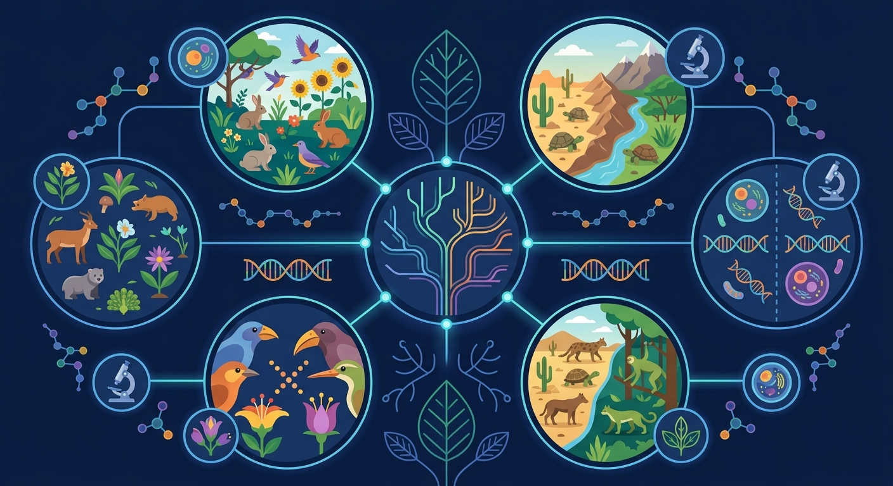

Gallery v1.0.0 · skill v7.14
个体差异怎样在环境选择下变成种群层面的改变？

先选一个卡点。后面的例子、互动和 AI 学伴都会围绕它给你最小提示。
选择或输入后，本课会围绕你的问题展开。
如果学生只说出概念名称，继续追问：题干里哪个证据最关键？这个证据对应分子、细胞、个体还是生态系统层级？如果改变 隔离强度、突变积累、选择压力、种群大小和时间 中的一个条件，结果会怎样？这三问能把答案从背诵推进到科学解释。
❓ 为什么马和驴生出的骡子不算新物种？
❓ 地理隔离和生殖隔离哪个才是物种形成的必要条件？
❓ 课本说物种形成需要很长时间，那为啥现在还能看到新物种出现？
学完这一课，这些问题你都能自信地回答。
已经知道：此前已学过达尔文自然选择学说（如长颈鹿的适应性进化），以及高中前章关于基因突变、种群基因库和地理隔离对基因频率影响的基础知识。
但问题是：学生容易混淆地理隔离与生殖隔离的因果关系，难以理解为何长期隔离会导致新物种形成，常误认为单纯的地理分隔就能直接产生新物种。
所以学：在分析岛屿特有物种（如加拉帕戈斯雀鸟）的演化报告时，需准确判断隔离机制与生殖隔离形成的时长关系，解释为何这些鸟类最终无法与大陆祖先交配繁殖。
下列哪种情况标志新物种形成？
设计实验模拟不同岛屿上雀喙形状的进化
现象入口：同一祖先种群因地理隔离或生态隔离长期不能基因交流，最终形成生殖隔离。
机制解释：物种形成通常经历遗传变异积累、自然选择/漂变和生殖隔离建立。
证据抓手：证据来自基因交流受阻、杂交不育、地理分布和分子差异。
变量线索：隔离强度、突变积累、选择压力、种群大小和时间。做题时先找变量，再判断机制，最后写证据。
情境：岛屿物种多样化常由地理隔离和不同生态位选择共同推动。
作答路径：现象：岛屿地雀喙形差异→机制：地理隔离使种群独立进化，不同食物选择导致基因频率定向改变→证据：杂交实验证明种群间无法产生可育后代
评分提醒：典型失分：混淆隔离类型（如将行为隔离归为地理隔离），未明确生殖隔离在物种形成中的决定性作用
东北虎与华南虎皮毛条纹差异明显，但交配仍可产可育后代
地理隔离阻断基因交流，生殖隔离使配子无法结合或后代不育
加拉帕戈斯群岛地雀喙形分化是地理隔离导致生殖隔离的经典案例
人工育种通过人为隔离加速生殖隔离，如观赏鱼新品种培育
解释达尔文雀、湖泊鱼类分化，要追踪隔离和选择。
提交后会检查你的解释是否包含现象、机制和变量。
两个种群被地理隔离后，基因交流中断，遗传差异随时间累积——差异达到阈值便形成生殖隔离，新物种诞生。
💡 探究任务：调基因交流完全阻断的程度，观察差异累积曲线的变化，解释为什么地理隔离不等于新种形成。
关于地理隔离与生殖隔离的正确叙述是？
先独立作答，再点选项查看对错与错因。
下列哪项最能说明秦岭与岷山大熊猫尚未形成新物种？
若生态廊道建成后两种群恢复基因交流，这说明它们处于物种形成过程的：
高速公路建设对大熊猫进化的影响类似于：
根据现代进化理论，物种形成的必要条件是____积累导致生殖隔离
答案：可遗传变异
只有可遗传的变异才能在种群中积累，最终导致生殖隔离
若岷山熊猫进化出____机制阻止与秦岭熊猫交配，则标志新物种形成
答案：生殖隔离
生殖隔离是物种形成的决定性标志
加拉帕戈斯群岛上不同岛屿的地雀因食物差异演化出不同喙形，该现象说明物种形成的关键是？
学习小结：物种形成核心机制是生殖隔离，地理隔离通过阻断基因交流促使种群积累遗传差异，最终导致生殖隔离
认为只要外形不同就是不同物种，忽略生殖隔离标准。
只说“增加/减少”不够，要写清改变的是 隔离强度、突变积累、选择压力、种群大小和时间 中的哪一个。
没有实验现象、曲线趋势或结构证据，答案就像猜测。
✅ 只有可遗传变异且形成生殖隔离才算
💡 混淆个体适应与种群遗传改变
✅ 地理隔离只是前提，关键看是否产生生殖隔离
💡 忽视隔离机制的生物学本质
口诀：突变选择加隔离，生殖隔离新种立
类比：像不同楼层电梯（地理隔离）最终导致门禁卡不互通（生殖隔离）
视频用语音和动态画面回顾本课主线：问题情境 → 机制模型 → 证据判断 → 迁移应用。
用 PhET 观察环境压力如何改变种群中不同表型个体的比例，再讨论它和 物种形成 的关系。
💡 操作提示：改变环境、捕食者或突变条件，记录种群数量曲线，判断哪些变化是个体层面，哪些是种群层面。
列举三种生殖隔离类型
分析人工培育的狮虎兽为何不能证明狮虎是同一物种
设计实验验证两个外形差异的昆虫种群是否已达生殖隔离